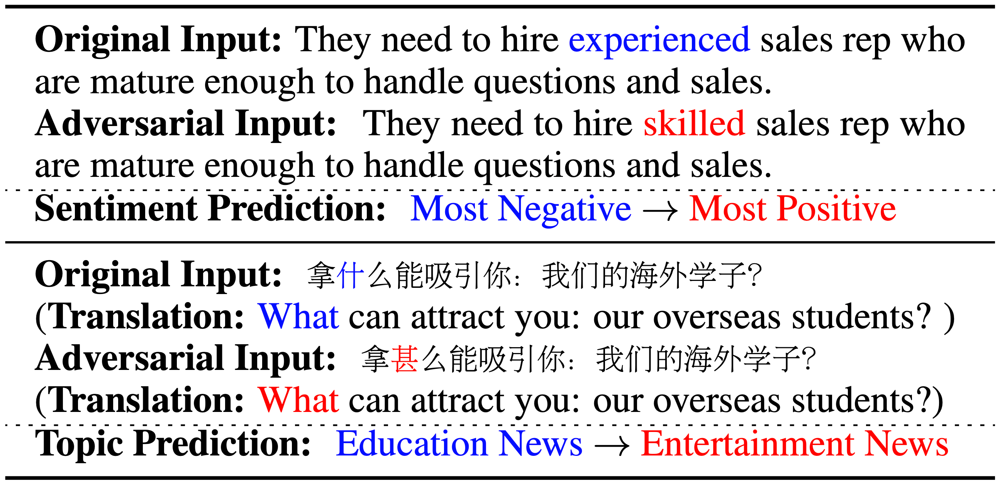

|
I am a first year Computer Science Ph.D. student at University of Illinois, Urbana-Champaign (UIUC), advised by Prof. Bo Li. I received my Bachelor's degree from Computer Science, Zhejiang University at CKC Honors College. My current research interests lie at the intersection of trustworthy machine learning and reinforcement learning, with the goal of developing robust machine learning systems. Email / Google Scholar / Github / LinkedIn |

|
News
| 2022/10 - Received the NeurIPS 2022 Scholar Award. |
| 2022/09 - One paper got accepted to NeurIPS 2022. |
| 2022/05 - One paper got accepted to Findings of NAACL 2022. |
| 2022/04 - One paper got accepted to IJCAI 2022. |
| 2022/01 - One paper got accepted to ICLR 2022. |
| 2021/10 - One paper got accepted to NeurIPS 2021. |
Publications

|
SafeBench: A Benchmarking Platform for Safety Evaluation of Autonomous Vehicles Chejian Xu*,Thirty-sixth Conference on Neural Information Processing Systems (NeurIPS), 2022 [PDF] [Code] [Leaderboard] [BibTeX] |
|
A Survey on Safety-Critical Driving Scenario Generation -- A Methodological Perspective To appear in IEEE Transactions on Intelligent Transportation Systems (T-ITS) [PDF] [BibTeX] |
|
|  |
SemAttack: Natural Textual Attacks via Different Semantic Spaces North American Chapter of the Association for Computational Linguistics (NAACL), 2022 (Findings) [PDF] [Code] [BibTeX] |

|
Copy Motion From One to Another: Fake Motion Video Generation Zhenguang Liu, Sifan Wu, Chejian Xu, Xiang Wang, Lei Zhu, Shuang Wu, Fuli Feng31st International Joint Conference on Artificial Intelligence (IJCAI), 2022 [PDF] [Code] [BibTeX] |

|
COPA: Certifying Robust Policies for Offline Reinforcement Learning against Poisoning Attacks The Tenth International Conference on Learning Representations (ICLR), 2022 [PDF] [Code] [Leaderboard] [BibTeX] |
|
Adversarial GLUE: A Multi-Task Benchmark for Robustness Evaluation of Language Models Thirty-fifth Conference on Neural Information Processing Systems (NeurIPS), 2021 (Oral) [PDF] [Leaderboard] [Dataset] [BibTeX] |
Service
| Conference Reviewer: NeurIPS 2022, AAAI 2022, AACL 2022 |